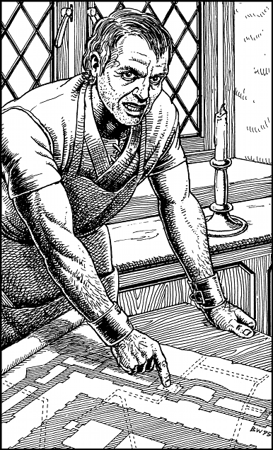

338
Hulsta walks over to a bookcase and, from a secret compartment in its base, he takes out an ancient scroll. Delissa clears some space on a dining table and her husband carefully unfurls the yellowed parchment upon it.

‘One of my ancestors was an engineer who worked on the construction of Skull-Tor,’ says Hulsta. ‘These are his original plans—the only ones that remain in existence today.’
The parchment has faded with the passing of centuries, yet it still contains a wealth of information. Hulsta indicates the perimeter of the fortress’s inner keep, its great arch, and the location of several subterranean chambers. Of particular interest is the course of an underground river, which passes directly below the fortress, and a series of tunnels which connect Skull-Tor to remote parts of the city.
‘These passageways were constructed as escape routes for Prince Jiokara, the ruler who commissioned the building of Skull-Tor. Many have since been sealed off or have collapsed into the river, but there is one that still exists.’ Hulsta indicates its location on the map and you notice that it passes beneath the city’s Northern Quarter.
‘We can gain entry to this tunnel from the cellar of a building located on the corner of Cillan Square. I propose we go there tonight. I shall act as your guide and I will take you into Skull-Tor by this route. Once we have gained entry, you must complete your mission alone. I will stay in the tunnel and await your return. Then I shall bring you out of the tunnel and escort you to a safe place where we can await the arrival of the victorious Freeland armies.’
You voice your approval of Hulsta’s plan and he smiles. He is glad to have been given the chance to contribute to the downfall of the tyrant Lord Vandyan whom he despises. Before you set off, he excuses himself for a few minutes so that he may change out of his working clothes. While he is getting dressed, Delissa suggests that you may wish to visit their workshop.
‘We have many tools,’ she says. ‘There may be some that would be useful during your mission. You’re welcome to take whatever you wish.’
If you wish to accept Delissa’s offer to visit their workshop, turn to 79.
If you choose to decline her offer, turn to 19.